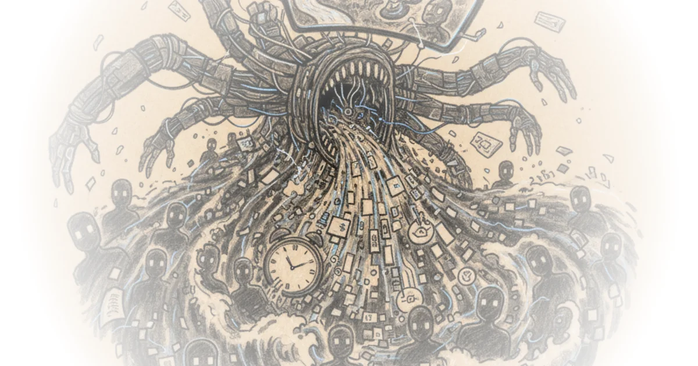

Then & Now delivers a sobering diagnosis of a digital ecosystem on the brink of saturation, arguing that the arrival of ultra-realistic AI video generation marks not just a technological leap, but the beginning of a "cultural slop apocalypse." The piece distinguishes itself by moving beyond abstract fears of job loss to demonstrate, with visceral examples, how the sheer volume of synthetic media is already drowning out human journalism and historical nuance. This is a critical warning for anyone navigating the information age: the barrier between truth and fabrication is not just blurring; it is being actively erased by algorithms that prioritize engagement over accuracy.
The Flood of Synthetic Reality
Then & Now opens by highlighting the rapid evolution of tools like Google's Flow AI, which now produces clips indistinguishable from reality. The author illustrates this with a barrage of examples, from a man licking a "glowing pole" in the "Chernobyl challenge" to a Wall Street Journal reporter using AI to create a fake product review. The core of the argument is that the cost of producing high-fidelity deception has plummeted, making it accessible enough to flood the internet. As Then & Now observes, "The fiction here is indistinguishable from reality." This observation is chilling because it suggests that the traditional guardrails of verification—visual and auditory cues—are no longer reliable.

The author notes that while creating these clips currently costs money, the trajectory is clear. "In about five years, we're going to live in a world that is completely different," they warn, predicting a future where the internet is saturated with content that mimics human intent but lacks human origin. This framing is effective because it grounds the abstract concept of "AI" in the tangible experience of scrolling through a feed and feeling a growing sense of disorientation. Critics might argue that media literacy will eventually catch up, allowing audiences to spot these flaws, but the speed of technological improvement suggests the gap between production and detection will only widen.
"He who controls the memes of production."
The piece also touches on the economic implications, noting that major corporations are already reducing hiring because AI can perform the work. The author points out that companies like Duolingo and Microsoft have reported they "won't be rehiring" thousands of workers. This shift signals a fundamental change in the labor market where the ability to generate content is no longer a scarce resource. The argument holds weight here: when the marginal cost of content approaches zero, the value of human effort in content creation is threatened unless it offers something AI cannot replicate.
The Death of Nuance and History
Perhaps the most poignant section of the commentary focuses on the impact on historical discourse. Then & Now describes how dedicated history channels are struggling against a "tidal wave of AI generated videos" that are often "wrong, incomplete, or just bland." The author cites a specific example of an AI-generated video about Adolf Hitler and the Berlin Olympics that garnered millions of views despite its clear synthetic nature. The problem, as Then & Now articulates, is not just the existence of bad content, but the algorithmic amplification of it. "They flood the internet, pushed by algorithms that don't care about quality, just quantity."
This is a devastating critique of the current attention economy. The author argues that the medium itself is the message, and the medium is now one of infinite, low-cost replication. "Value in the world is determined, I think, by how rare something is," they write, lamenting that the rarity of human curation and deep research is being devalued by the abundance of machine-generated output. This perspective is crucial because it shifts the conversation from "will AI take our jobs?" to "what happens to the quality of our shared culture when the signal is drowned out by noise?"
The author also expresses a personal sense of loss regarding their own craft. "I've recently had the strange experience of mourning a skill that was rare until 2 minutes ago," they admit, describing the decades spent honing the ability to read, research, and write. This emotional resonance adds a layer of urgency to the piece, transforming it from a tech analysis into a eulogy for a specific kind of human intellectual labor. While one might argue that AI could free humans from drudgery to focus on higher-level thinking, the author's fear is that the sheer volume of synthetic content will make it impossible for high-level human work to be seen at all.
"If everyone can do something, if AI can produce it all at such dizzying speeds, then what you have is no longer valuable."
The piece also raises the issue of "hallucinations," where AI confidently presents false information as fact. The author describes using AI for book recommendations only to find that the books "just don't exist at all." This highlights a critical vulnerability in relying on these tools for knowledge acquisition. "It produces text responses and now videos that mix up truth and illusion," the author notes, warning that as these models improve, the line between fact and fiction will become increasingly difficult to navigate for the average user.
The Inequality of Attention
Finally, Then & Now connects the flood of content to a broader question of power and inequality. The argument posits that while AI lowers the barrier to entry for production, it simultaneously raises the barrier to visibility. "The question is not what AI can do but who it can do it for," they assert. Large corporations with deep pockets will be able to deploy AI to create thousands of tailored movies and advertisements, "flood the internet with it," and "inundate" the public sphere.
This creates a scenario where the attention economy is captured by those with the most resources. "Huge corporations, huge businesses, huge media conglomerates with the resources will be able to out compete everyone else," the author warns. This is a compelling extension of the "meme of production" concept, suggesting that the next era of media will be defined not by the diversity of voices, but by the concentration of synthetic content generation. The author draws a parallel to the 19th-century printing press, where initial plurality was eventually squeezed out by commercial centralization. "Everything became centralized," they note, and history suggests the same pattern will repeat in the digital age.
Critics might suggest that decentralized platforms or new regulatory frameworks could prevent this centralization, but the author's evidence of current trends—where big names like Joe Rogan and Elon Musk dominate the landscape—suggests a path toward consolidation rather than diversification. The fear is that smaller creators and independent journalists will be "harder and harder to get heard and get seen" because they cannot compete with the mass and economic power of entities using AI to saturate the market.
"You will always find one that appeals to your own biases, desires, prejudices that you will just not help be able to click on and watch."
The piece concludes with a somber reflection on the future of human connection. The author worries that if we cannot distinguish between "ones and zeros and flesh and blood," the very fabric of our social reality may unravel. "I hope we continue to be able to distinguish between ones and zeros and flesh and blood, but I'm not sure," they write. This uncertainty is the piece's most powerful element, leaving the reader with a lingering sense of unease about the direction of our digital future.
Bottom Line
Then & Now's argument is strongest in its vivid illustration of how AI-generated "slop" is already overwhelming the information ecosystem, making it difficult to distinguish truth from fabrication. Its biggest vulnerability lies in its somewhat deterministic view of the future, potentially underestimating the resilience of human communities to curate and verify information. Readers should watch for how regulatory bodies and platform algorithms respond to this flood of synthetic media, as the battle for the integrity of the public sphere is just beginning.